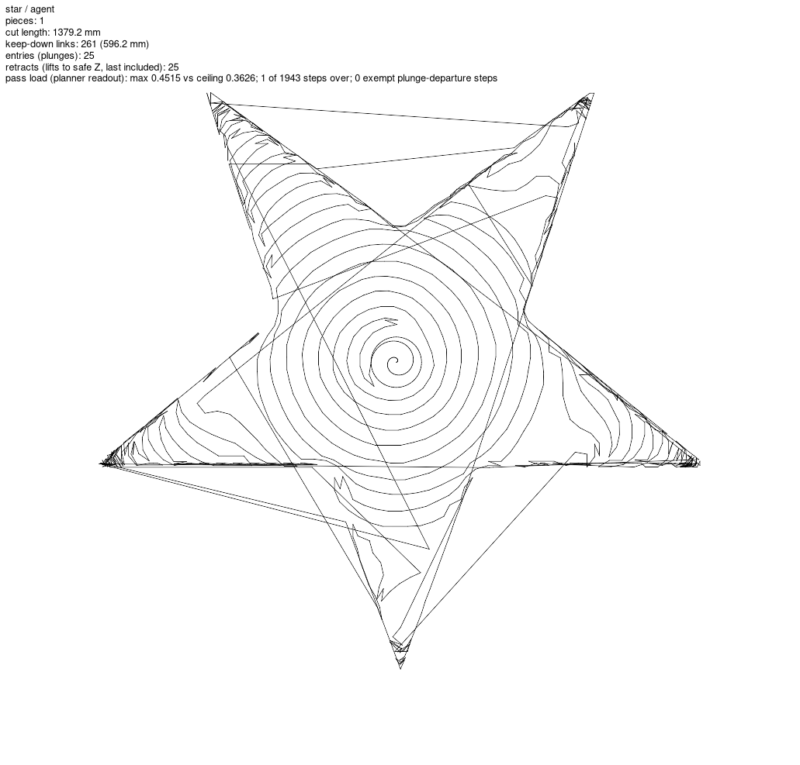
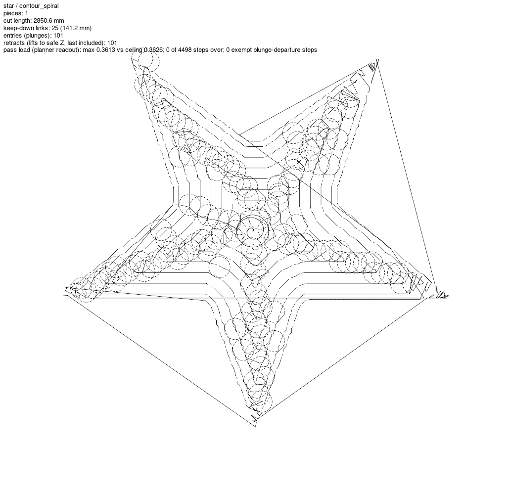
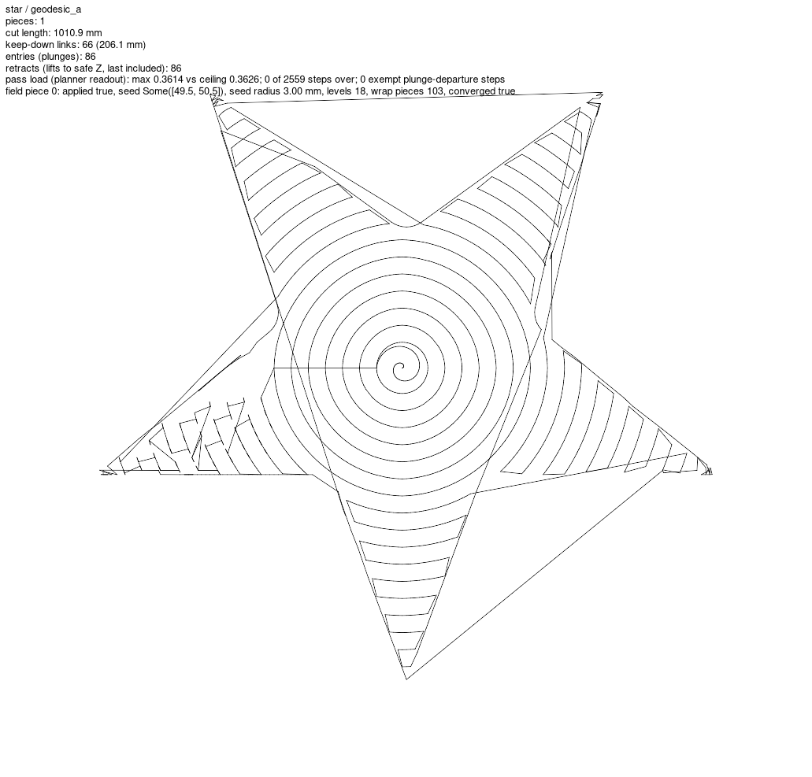
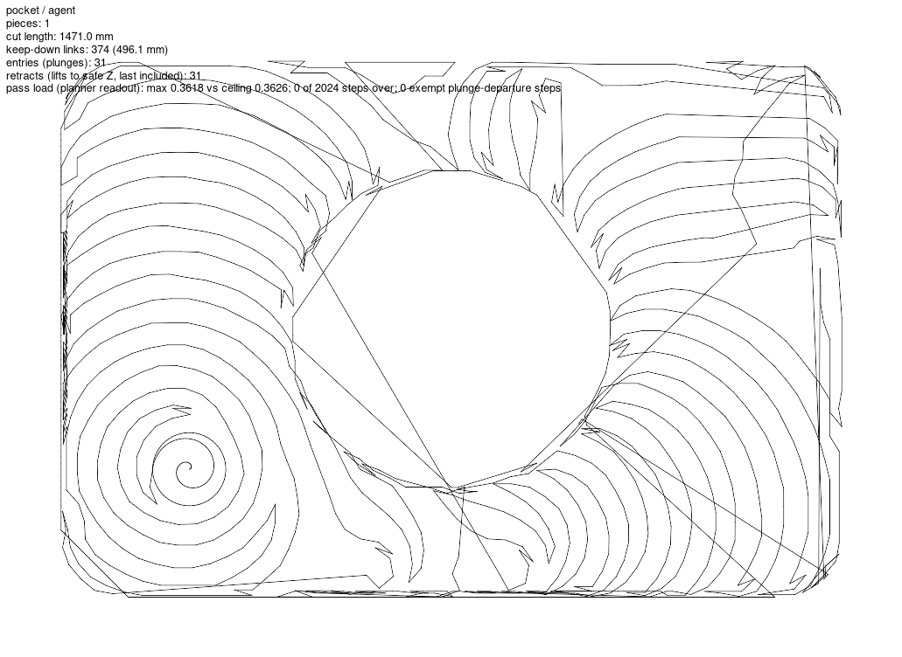
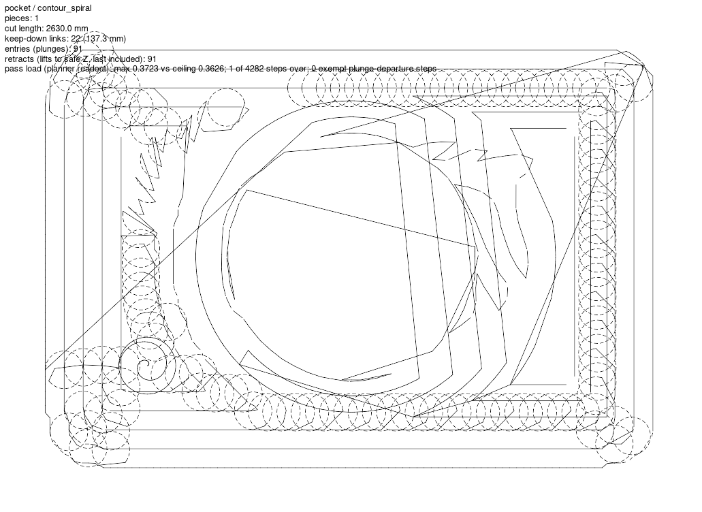
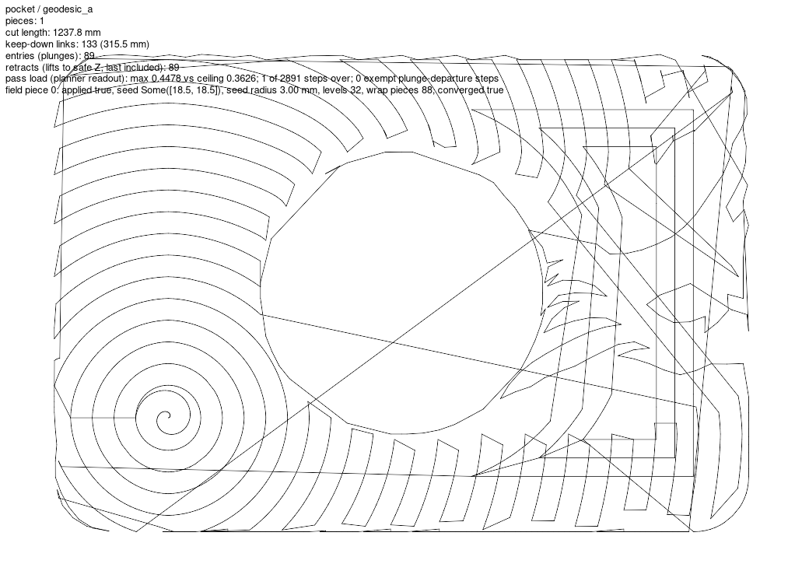

Fixtures test_data/ux_2d_star.toml and test_data/ux_2d_pocket.toml (development shapes). Harness adaptive_geodesic_2d_renders_g1 on branch adaptive-instruments (commits de64e6ad..a2ceb3e1, master merged), 2026-10-23 14:39. Same tool, stepover and pass-load ceiling in every column. Click an image for the SVG. Counts are information, not a ranking. The operator picks by look: do the links make sense, does the path make sense.

star / agent
pieces: 1
cut length: 1379.2 mm
keep-down links: 261 (596.2 mm)
entries (plunges): 25
retracts (lifts to safe Z, last included): 25
pass load (planner readout): max 0.4515 vs ceiling 0.3626; 1 of 1943 steps over; 0 exempt plunge-departure steps

star / contour_spiral
pieces: 1
cut length: 2850.6 mm
keep-down links: 25 (141.2 mm)
entries (plunges): 101
retracts (lifts to safe Z, last included): 101
pass load (planner readout): max 0.3613 vs ceiling 0.3626; 0 of 4498 steps over; 0 exempt plunge-departure steps

star / geodesic_a
pieces: 1
cut length: 1010.9 mm
keep-down links: 66 (206.1 mm)
entries (plunges): 86
retracts (lifts to safe Z, last included): 86
pass load (planner readout): max 0.3614 vs ceiling 0.3626; 0 of 2559 steps over; 0 exempt plunge-departure steps
field piece 0: applied true, seed Some([49.5, 50.5]), seed radius 3.00 mm, levels 18, wrap pieces 103, converged true

pocket / agent
pieces: 1
cut length: 1471.0 mm
keep-down links: 374 (496.1 mm)
entries (plunges): 31
retracts (lifts to safe Z, last included): 31
pass load (planner readout): max 0.3618 vs ceiling 0.3626; 0 of 2024 steps over; 0 exempt plunge-departure steps

pocket / contour_spiral
pieces: 1
cut length: 2630.0 mm
keep-down links: 22 (137.3 mm)
entries (plunges): 91
retracts (lifts to safe Z, last included): 91
pass load (planner readout): max 0.3723 vs ceiling 0.3626; 1 of 4282 steps over; 0 exempt plunge-departure steps

pocket / geodesic_a
pieces: 1
cut length: 1237.8 mm
keep-down links: 133 (315.5 mm)
entries (plunges): 89
retracts (lifts to safe Z, last included): 89
pass load (planner readout): max 0.4478 vs ceiling 0.3626; 1 of 2891 steps over; 0 exempt plunge-departure steps
field piece 0: applied true, seed Some([18.5, 18.5]), seed radius 3.00 mm, levels 32, wrap pieces 88, converged true
Known risks of (a), from the module doc: field over-reads island corners (about 2.5 cells); kinks where fronts meet; the 24-sweep cap (both runs converged); one step over the pass-load ceiling on the pocket (0.4478 vs 0.3626) whose position the readout does not yet give.